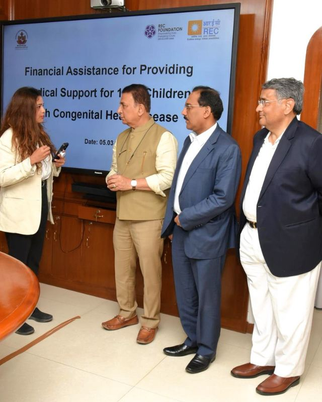

Work CSR and impact
Foundation, CSR and community impact
At REC, I turned program and impact information into stories for citizens, partners, investors and the Board. For each publication, I gathered and analyzed program data, shaped the storytelling, coordinated the design team and managed departmental approvals to make sure every fact was correct.
Case studyHelping millions of households sign up for electricityRead the case study
Partnerships for Society
REC Foundation's programs in health, education, skills, women's empowerment, sanitation, rural development and environmental sustainability.
My role Wrote, edited and synthesized program information, conceptualized the 4P CSR model organizing the book, and oversaw the design.
Read the publication, 18 pages
Lighting Lives: India's journey towards 100% household electrification
Beneficiary stories and photography paired with program milestones and data, told through families receiving electricity for the first time.
Read the book, 51 pages
Powering Smiles: Illuminating India
The national rural electrification program, from strategy and milestones to the communities it reached, with data, field photography and first-person accounts.
Read the publication, 27 pages
REC Foundation marks 10 years with its first CSR Symposium
Announcement of the symposium marking a decade of REC's CSR arm, bringing together the Board, regional teams and Foundation stakeholders.
Read the release
From Vaults to Screens: How BFI Replay Democratized Access to British Screen Heritage
How the British Film Institute preserved 100,000 videotapes and reached about 2,000 UK public libraries through a free streaming platform.
My role Researched and wrote the case study.
Read the case study, 8 pages
Medical support for children with congenital heart disease
One of the CSR programs I led communications for at REC Foundation.